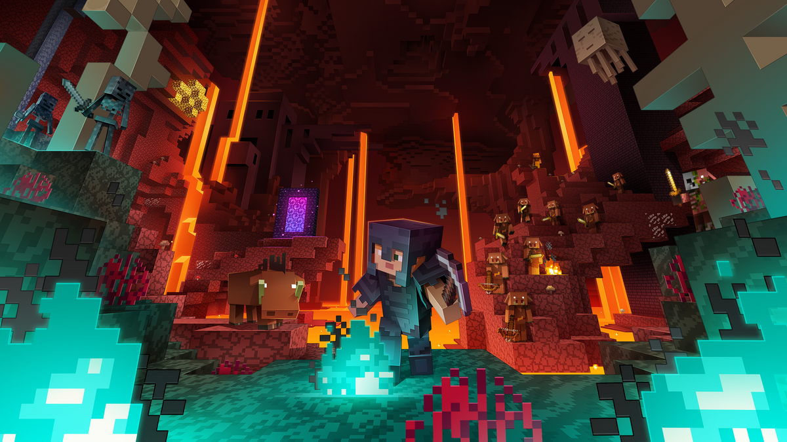
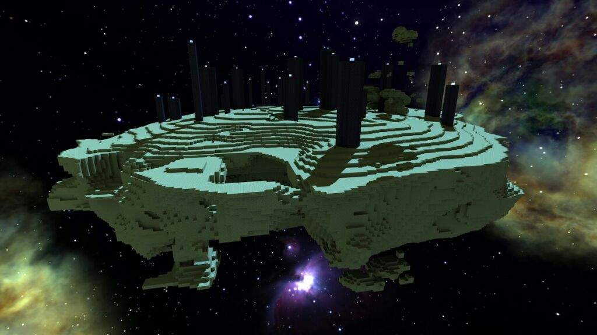

Minecraft é um dos jogos mais populares e influentes do mundo. Criado por Markus Persson e lançado oficialmente pela Mojang em 2011, ele é um jogo de aventura, construção e sobrevivência em um mundo aberto feito de blocos. No Minecraft, os jogadores podem explorar cenários infinitos, construir qualquer coisa que imaginarem, minerar recursos, enfrentar criaturas perigosas e interagir com outros jogadores.
O visual simples e pixelado se tornou a marca registrada do jogo. Apesar de parecer "quadrado", o Minecraft encanta pela liberdade criativa, possibilidades infinitas e constante evolução com atualizações, modos de jogo diferentes (como Sobrevivência, Criativo, Aventura e Hardcore) e servidores online com minigames.
Além disso, o jogo incentiva o raciocínio lógico, criatividade, cooperação e até programação com o uso de redstone e comandos. Por isso, Minecraft é muito usado também na educação. Ele conquistou milhões de jogadores no mundo todo, tanto em celulares quanto no PC e consoles. É mais do que um jogo: é um universo onde tudo pode ser criado.
COMO SURGIU O MINECRAFT
Modo Sobrevivência Esse é o modo mais jogado. Nele, o jogador começa com nenhum recurso e precisa coletar materiais, construir ferramentas, enfrentar monstros, e cuidar da sua fome e vida. O objetivo é sobreviver o máximo possível e evoluir, podendo até enfrentar o temido Ender Dragon, o chefe final do jogo.
Modo Criativo Neste modo, o jogador tem acesso a todos os blocos e itens do jogo de forma ilimitada, podendo voar e construir o que quiser sem se preocupar com vida ou fome. É o modo perfeito para quem gosta de arquitetura, criação de mapas ou apenas quer explorar e experimentar sem limites.
Modo Aventura O modo aventura é feito especialmente para quem joga mapas personalizados criados por outros jogadores. Ele limita a interação com os blocos (só dá para quebrar blocos com ferramentas certas), deixando o foco na história, missões e exploração.
Modo Hardcore Esse é o modo mais desafiador. Ele é igual ao modo Sobrevivência, mas com um detalhe: só tem uma vida. Se o jogador morrer, o mundo é deletado automaticamente (ou fica inacessível). É um modo para quem busca emoção e dificuldade extrema.
Modo Espectador No modo espectador, o jogador pode voar e atravessar blocos, mas não pode interagir com o mundo. É ideal para observar construções, explorar cavernas ou assistir outras pessoas jogando.
É o mundo principal, onde o jogador começa o jogo.
Esse é o mundo onde a maior parte da aventura acontece.
É uma dimensão infernal, acessada por um portal feito de obsidiana.
O Nether é essencial para avançar rumo ao fim do jogo.
É a dimensão final, onde fica o dragão do Ender.
É o desafio final para os jogadores mais preparados.